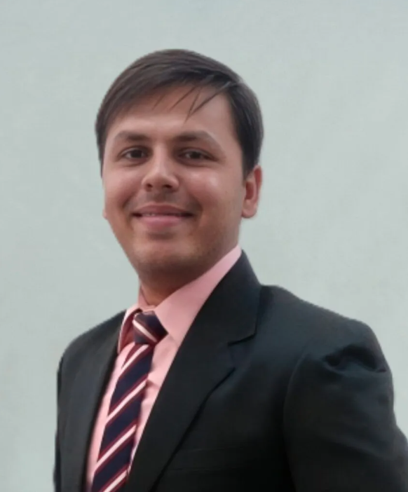

Parth Lakhalani
Acting CISO, Mediaire GmbH
I run Information Security and IT at a HealthTech AI company in Berlin. I build ISMS and Business Continuity programmes, take companies through ISO 27001 audits, automate GRC work with AI, and lecture at BSBI Berlin.
Career Path
- 2014 to 2019Offensive SecurityEthical Hacking, VAPT and forensics labs
- 2019 to 2023Blue Team (Forensic) & TeachingDefensive Security, 3,000+ students and research
- 2023 to 2025Data Science & AIMaster's in Data Science, MBA in Big Data Management
- 2025 to nowGRC & AI GovernanceISMS, BCMS and AI Automation
- Years in security and teaching
- 10
- Certifications
- 5+2 in progress
- Students taught
- 3,000+
- Peer-reviewed publications
- 10+
Statement of Applicability
| Standard or certificate | What I do | Status |
|---|---|---|
| ISO/IEC 27001:2022 Lead Implementer & Lead Auditor | ISMS and AuditsBuild and run the ISMS, internal and certification audits | Certified |
| ISO 22301:2019 (BCMS) | Business ContinuityBusiness Impact Analysis, recovery plans and tests | Work Experience |
| AIGP (IAPP), ISO/IEC 42001:2023, ISO/IEC 27090 | AI Governance and AI SecurityEU AI Act and NIST AI RMF readiness for HealthTech AI | In Progress |
| CEH, EC‑Council | Offensive SecurityCertified Ethical Hacker, pentesting and VAPT | Certified |
| CHFI, EC‑Council | Digital ForensicsInvestigations, research and lecturing | Certified |
| AWS Cloud Security, ISO/IEC 27017/27018 | Cloud SecurityAWS infrastructure, identity and access | Certified |
| ISO 13485:2016, ISO 9001:2015 | Quality ManagementSecurity inside the medical software QMS | Work Experience |
| GDPR, EU MDR, NIS2 | Regulatory CompliancePrivacy and security for patient data | Work Experience |
How I Run an ISMS
Plan, Do, Check, Act on ISO/IEC 27001:2022Plan
- Set the ISMS scope, risk method and Statement of Applicability
- Wrote security policies, including Data Classification for patient data
- Ran the Business Impact Analysis for ISO 22301
Do
- Put controls in place with R&D, IT and AWS owners
- Supplier Security assessments and Access Management
- Pentest planning, awareness, and joiner, mover, leaver controls
Check
- Internal Audits as ISO 27001 Lead Auditor
- Led the company through its Certification Audit
- Access Reviews, Log Reviews and Continuity Tests
Act
- Closed Corrective Actions (CAPA) after the audit
- Report risks and status for Management Review
- Turn lessons from incidents and pentests into controls, and automate where it helps
Then the cycle repeats: what we learn in Act feeds the next Plan.
Governance Programme at Mediaire
HealthTech AI for radiology- active
ISMS and Certification
Operate and improve the ISO 27001 ISMS, with controls and evidence ready for audits.
- active
Security Risk Management
Coordinate risk assessments and treatment plans with the right risk owners.
- active
Vulnerabilities and Incidents
Vulnerability Management, penetration test coordination and Incident Response.
- active
Medical Device Cybersecurity
Turn regulatory, Notified Body and customer requirements into controls and evidence.
- active
Cloud and Supplier Security
Cloud Security, secure architecture, Access Reviews and supplier assessments.
- active
Business Continuity (ISO 22301)
Business Impact Analysis, recovery priorities and recovery tests.
Competence Matrix
Evidence for ISO 27001 clause 7.2| Certified | At work | Taught | Research | |
|---|---|---|---|---|
| ISMSISO/IEC 27001:2022 | ||||
| Business ContinuityISO 22301:2019 | ||||
| Quality ManagementISO 9001, ISO 13485 | ||||
| Health Data and PrivacyGDPR, EU MDR | ||||
| AI GovernanceISO/IEC 42001, 27090 | ||||
| AI Automationn8n and LLMs | ||||
| Cloud SecurityAWS | ||||
| Offensive SecurityCEH, VAPT | ||||
| Digital ForensicsCHFI |
AI Automation for GRC and Security
AI does the reading, people make the callGRC work is full of reading, sorting and chasing. I build AI workflows with n8n and large language models that do the first pass, so the team spends its time on decisions, not on searching.
Feeds
Regulators, standards bodies and security news
What's New
Only items from the last one or two days
AI Triage
Ranks each item by relevance
Morning Brief
A short email, plus a list of what was reviewed and skipped
Workflows in Use
- Regulatory WatchliveDaily brief on new regulation and standards, every weekday morning
- Threat Intelligence DigestliveDaily summary of security news, ranked by relevance
- Self-hosted ModelsnextMoving to local models so sensitive data stays in-house
What I Can Automate for You
- Regulatory MonitoringNIS2, EU AI Act, MDR, GDPR
- Audit Evidence CollectionGather and track evidence
- Policy Gap ChecksCompare policies with standards
- Security QuestionnairesDraft answers for customers
Audit Trail
Career, newest first. Select a role for details.- 2026-10STARTEDAIGP certification, IAPP AI Governance
- 2026-06BUILTAI Regulatory Watch and threat digests n8n and LLM
-
2026-02ROLELecturer, BSBI Berlin current▸
- Teach cybersecurity, GRC and AI Governance to an international student cohort
- Design hands-on sessions that connect theory to real security and compliance work
- Prepare course materials, assessments and technical exercises
- 2026PASSEDLed Mediaire through its ISO 27001 Certification Audit
- 2025-10DEGREEMBA, Big Data Management and Data Science, London South Bank University dual degree
-
2025-03ROLECybersecurity Officer (Acting CISO), Mediaire GmbH, Berlin current▸
- Lead GRC and the ISMS (ISO/IEC 27001:2022) for AI radiology platforms used across Europe
- Extend the programme into AI Governance with ISO/IEC 42001 and NIST AI RMF
- Run risk assessments (ISO/IEC 27005) and cloud reviews on AWS with ISO/IEC 27017/27018
- Internal Penetration Testing and review of external assessments
- Compliance across GDPR, FDA, EU MDR, ISO 13485 and BSI IT-Grundschutz
- Built and maintain the Business Continuity Management System (ISO 22301)
- Deliver Security Awareness training
- 2024-10DEGREEMaster's in Data Science and Big Data Management, IU International University of Applied Sciences
-
2023-04ROLETrainer and Consultant, Sherlock School of Cyber Security and Forensic (SSCSF) to 2025▸
- Workshops on GRC, Ethical Hacking and Digital Forensics for 100+ professionals
- Advised organisations on security awareness, data privacy and NIST and ISO 27000 compliance
- Hands-on training in Ethical Hacking, Cloud Security (AWS) and Network Security
-
2019-07ROLEAssistant Professor and Examination Coordinator, Parul University to 2023▸
- Research in cybersecurity and Digital Forensics: 10+ peer-reviewed papers and 20+ cybercrime investigations
- Supervised 15+ theses and taught 3,000+ students
- Courses on Malware Analysis, network forensics and cybercrime investigation
- Examination Coordinator from 2021, leading a team of 70+
- Contributed to the university achieving NAAC A++ accreditation
- 2020DEGREEB.Ed, Bachelor of Education, Bhakta Kavi Narsinh Mehta University
-
2016-07ROLELecturer, SSSD Institute of Information Technology to 2019, Offensive Security focus▸
- Taught cybersecurity, Ethical Hacking and Digital Forensics
- Ran lab sessions in information security, VAPT, networking and programming
- Mentored student research and academic projects
- 2016DEGREEMaster of Science (MSc), Cyber Security and Digital Forensics, Gujarat University gold medallist
- 2015-12INTERNCBI Central Forensic Science Laboratory, New Delhi digital evidence, ballistics, questioned documents
- 2014DEGREEBachelor of Science (BSc), Forensic Science (Cyber Forensics), Saurashtra University
- 2012DIPLOMADiploma, Business Administration Programmer, NIELIT
Service Catalogue
Freelance, remote or in BerlinISO/IEC 27001 and Audits
Gap analysis, ISMS build, Internal Audits and audit readiness to ISO/IEC 27001:2022, as a certified Lead Implementer and Lead Auditor.
Request this serviceAI Governance
AI risk assessment and readiness for ISO/IEC 42001, ISO/IEC 27090 and the EU AI Act, for teams that build or use AI.
Request this serviceHealthTech Security
Security and privacy for products that handle patient data: GDPR, EU MDR, ISO 13485, ISO 9001 and Data Classification.
Request this serviceTeaching and Workshops
University lectures and company workshops on Digital Forensics, Ethical Hacking and GRC.
Request this serviceAI Automation for GRC
Workflows that monitor regulation, collect audit evidence and draft security answers, with people approving the result.
Request this serviceBusiness Continuity (BCMS)
Business Impact Analysis, recovery plans and Continuity Tests to ISO 22301:2019.
Request this serviceCredentials
Certifications, training, languages| Certification | Issuer | Status |
|---|---|---|
| ISO/IEC 27001 Lead Implementer verify | TÜV SÜD, 2025 | Certified |
| ISO/IEC 27001 Lead Auditor | Certified | |
| CHFI verify | EC-Council, 2024 | Certified |
| CEH verify | EC-Council, 2024 | Certified |
| AWS Cloud Security verify | InfosecTrain | Certified |
| AIGP, AI Governance Professional | IAPP, 2026 | In Progress |
| CISSP | ISC2 | In Progress |
Other training and languages
- 2025ICS/OT Security (NIST 800-82), Cisco CCNP ENCOR, IT Service Management
- LangEnglish (professional), German (learning, toward B1), Hindi and Gujarati (native)
Education
Dual master's, MSc and BSc- 2025MBA, Big Data Management and Data ScienceLondon South Bank University (LSBU), dual degree
- 2024Master's in Data Science and Big Data ManagementIU International University of Applied Sciences
- 2020B.Ed, Bachelor of EducationBhakta Kavi Narsinh Mehta University
- 2016Master of Science (MSc), Cyber Security and Digital ForensicsGujarat University, gold medallist
- 2014Bachelor of Science (BSc), Forensic Science (Cyber Forensics)Saurashtra University, Rajkot
- 2012Diploma, Business Administration ProgrammerNIELIT, National Institute of Electronics and Information Technology
Research and Talks
10+ peer-reviewed publications- 2024Navigating Global Data Privacy Regulations: Cybersecurity and Compliance Strategies in Big Data ManagementMaster's thesis, IU International University
- 2024Bytes By Bytes: Unmasking Digital Shadows in Forensic InvestigationsIJCRT
- 2023Static Approach for Malware Analysis: A Guide to Analysis Tools and TechniquesIJRASET
- 2023Forensic Phenotyping: Unveiling Hidden Clues from Discarded WasteJournal of Forensic Sciences and Criminal Investigation
- 2023Cloud Security AssessmentsTalk, Ahmedabad Management Association
- 2022Computer Forensics Data Recovery Software: A Comparative StudyIJIRCST
- 2021The Psychological Impact of COVID-19 Pandemics on Gujarati AdultsInternational Journal of Indian Psychology
- 2016Forensic Analysis of Android Devices using LiME and VolatilityMSc thesis, Gujarat University
Request a Consultation
Need help with ISO 27001, AI Governance or a guest lecture? Send a short note about what you need. I usually reply within two working days.